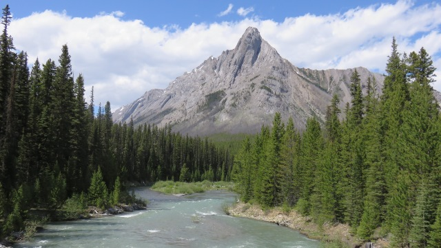
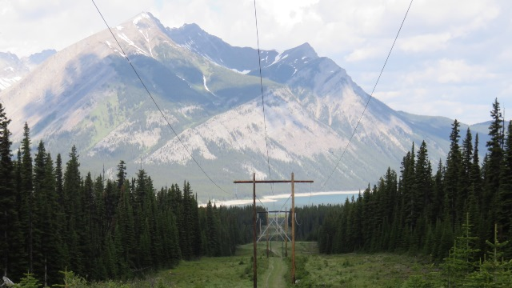
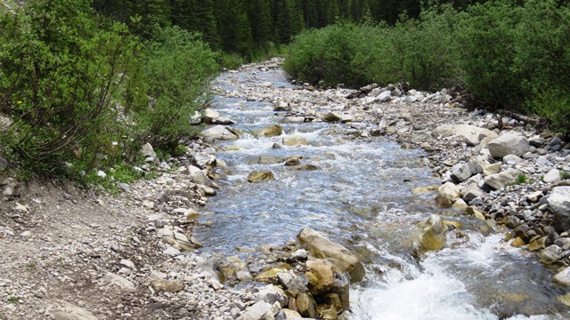
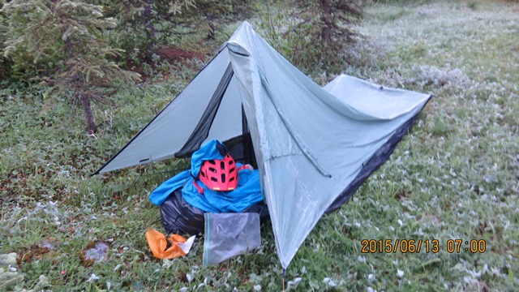
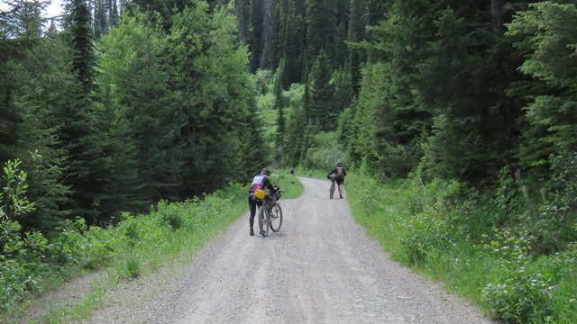
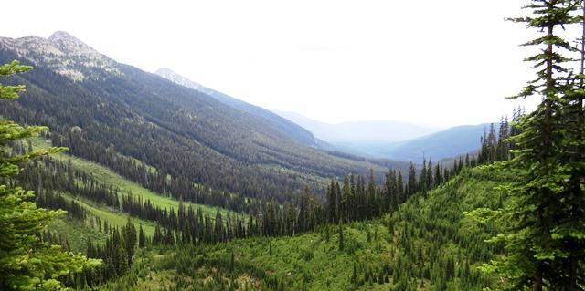
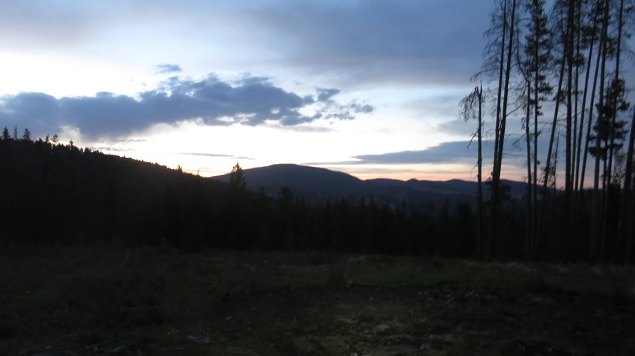
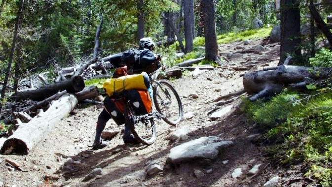
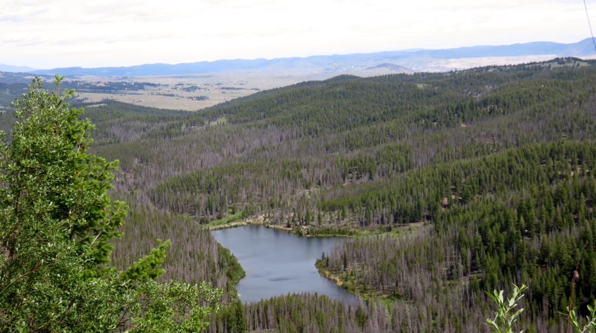

First two weeks - June 9 to June 22, 2015
Day 1 - Leaving Banff was the easy part.
Those hills didn't look so steep in the pictures
Tuesday, June 9, 2015 Banff, Alberta, Canada to Bolton Trading Post
9:59AM, 6h48m, 62.4 miles, 4,814 ft of climbing

Day 2 - Tires and Helmets
First Divide pass and a shaky set of tires
Wednesday, June 10, 2015 Bolton Trading Post to Elkford, BC
7:10am, 9h48m, 52.3 miles, 2,490 ft of climbing

Day 04 - Stream or Trail??
Two passes then "...shooting guns and blowing stuff up"
Friday, June 12, 2015 Sparwood to part way up Cabin Pass
7:02am, 7h56m, 72.8 miles, 4,557 ft of climbing

Day 5 - Cabin Pass, The Wall (WTF) and Galton Pass
Last day in Canada and it's a good one
Saturday, June 13, 2015 Cabin Pass to Eureka, MT, USA
7:39am, 7h40m, 59.8 miles, 4,548 ft of climbing

Day 6 - Whitefish Pass and Red Meadow Lake
Now I know why you don't use tubes
Sunday, June 14, 2015 Eureka to Whitefish Lake, MT
5:57am, 10h3m, 94.7 miles, 5,833 ft of climbing

Day 9 - Coming around the mountain
Circling Richmond Peak and a huge save
Wednesday, June 17, 2015 Holland Lake to Ovando, MT
8:45 AM, 8h49m, 60.34 miles, 5,574 ft of climbing

Day 10 - Big climbing day
Walk the last pass - camp when it gets dark
Thursday, June 18, 2015 Ovando to Priest Pass, MT
6:55 AM, 15h10m, 86.70 miles, 8,000 ft of climbing

Day 12 - Rocks, Roots and Missed Buses
Paying for wrong turns
Saturday, June 20, 2015 Helena to Butte, MT
6:56 AM 13h 54m 80.0mi 7,970ft of climbing

Day 13 - Rerouting to Jim's Tour Divide
Chocolate Milk at Great Divide Outfitters
Sunday, June 21, 2015 Butte to Wise River
8:45 AM, 8h 57m, 50.60 miles, 2,960 ft of climbing
